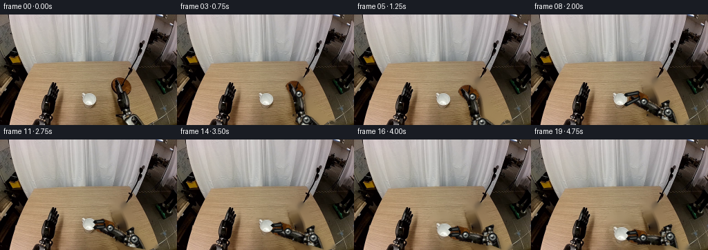
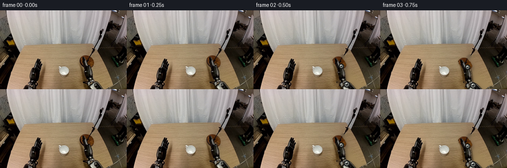
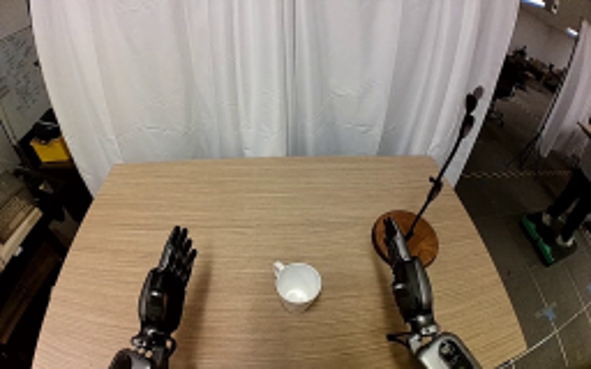
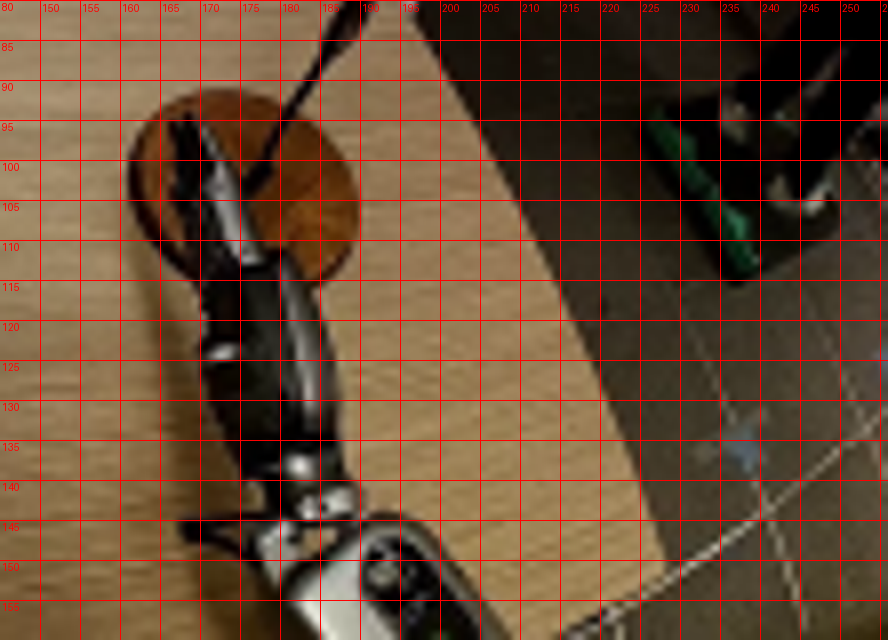
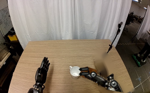
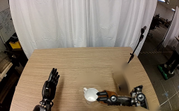
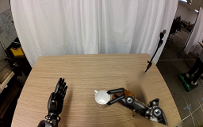
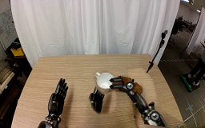

CODING AGENTS AS PIXEL WORLD MODELS
traex/GPT-5.6-Sol · common50_0031
点击播放 · 原生 RGB 像素
逐轮保存的候选
回放视频、检查图与代码变化。
每份候选均可单独播放。实际图片检查记录在下方工具轨迹中。
候选 01播放与检查图
点击播放 · 原生 RGB 像素

展开代码变化
--- 上一保存版本
+++ 本次保存版本
@@ -0,0 +1,187 @@
+from pathlib import Path
+import math
+import cv2
+import numpy as np
+from PIL import Image
+import artifact_io
+
+CASE = Path(__file__).resolve().parent
+SRC = np.array(Image.open(CASE / 'first_frame.png').convert('RGB'), dtype=np.uint8)
+H, W = SRC.shape[:2]
+
+def poly_mask(points):
+ m = np.zeros((H,W), np.uint8)
+ cv2.fillPoly(m, [np.array(points,np.int32)], 255, lineType=cv2.LINE_AA)
+ return m
+
+# The photographed arm is separated into three rigid links at its visible joints.
+polys = [
+ [(177,139),(184,132),(199,139),(227,157),(229,160),(181,160),(174,151)],
+ [(169,105),(184,101),(193,119),(198,138),(190,151),(177,146),(174,126)],
+ [(162,92),(171,87),(180,94),(185,105),(181,116),(171,113),(165,104)],
+]
+raw_masks=[]
+for p in polys:
+ region=poly_mask(p)
+ bgr=cv2.cvtColor(SRC,cv2.COLOR_RGB2BGR)
+ hsv=cv2.cvtColor(bgr,cv2.COLOR_BGR2HSV)
+ # Keep dark polymer, black rubber and neutral metal; reject the tan tabletop.
+ mx=SRC.max(2); mn=SRC.min(2); spread=mx-mn
+ material=((mx<125) | ((spread<48)&(mx<225)) | ((SRC[:,:,2]>115)&(spread<55)))
+ m=((region>0)&material).astype(np.uint8)*255
+ m=cv2.morphologyEx(m,cv2.MORPH_CLOSE,np.ones((3,3),np.uint8),iterations=1)
+ # Ensure narrow structural cores remain connected.
+ raw_masks.append(m)
+
+# A conservative union is used only to reconstruct the uncovered tabletop.
+remove_arm = np.zeros((H,W),np.uint8)
+cv2.fillPoly(remove_arm,[np.array([(162,88),(176,87),(188,101),(194,126),(201,140),(230,157),(230,160),(176,160),(170,150),(175,125),(164,109)],np.int32)],255)
+remove_arm=cv2.dilate(remove_arm,np.ones((5,5),np.uint8),iterations=1)
+base_armfree=cv2.inpaint(cv2.cvtColor(SRC,cv2.COLOR_RGB2BGR),remove_arm,5,cv2.INPAINT_TELEA)
+base_armfree=cv2.cvtColor(base_armfree,cv2.COLOR_BGR2RGB)
+
+# Mug matte: white ceramic including its small left handle.
+cup_region=poly_mask([(115,112),(126,109),(137,112),(142,119),(140,131),(133,137),(123,136),(118,130),(118,122),(114,118)])
+mx=SRC.max(2); mn=SRC.min(2)
+cup=((cup_region>0)&(mx>132)&((mx-mn)<72)).astype(np.uint8)*255
+cup=cv2.morphologyEx(cup,cv2.MORPH_CLOSE,np.ones((3,3),np.uint8),iterations=1)
+cup=cv2.dilate(cup,np.ones((2,2),np.uint8),iterations=1)
+# Keep a clean, compact edge while retaining the handle.
+cup_alpha=cv2.GaussianBlur(cup,(3,3),0.55)
+remove_cup=cv2.dilate(cup,np.ones((9,9),np.uint8),iterations=1)
+base_empty=cv2.inpaint(cv2.cvtColor(base_armfree,cv2.COLOR_RGB2BGR),remove_cup,5,cv2.INPAINT_TELEA)
+base_empty=cv2.cvtColor(base_empty,cv2.COLOR_BGR2RGB)
+
+B=np.array([214.0,170.0])
+E0=np.array([190.0,148.0]); W0=np.array([179.0,111.0]); G0=np.array([173.0,94.0])
+L1=np.linalg.norm(E0-B); L2=np.linalg.norm(W0-E0); L3=np.linalg.norm(G0-W0)
+ang0=math.atan2(*(G0-W0)[::-1])
+ang_contact=math.atan2(-8,-15)
+ang_lift=math.atan2(-5,-15)
+
+def ease(x):
+ x=float(np.clip(x,0,1)); return x*x*(3-2*x)
+
+def ik(wrist, hint):
+ v=wrist-B; d=float(np.linalg.norm(v)); d=min(max(d,abs(L1-L2)+1e-4),L1+L2-1e-4)
+ u=v/(np.linalg.norm(v)+1e-8); perp=np.array([-u[1],u[0]])
+ a=(L1*L1-L2*L2+d*d)/(2*d); h=math.sqrt(max(0,L1*L1-a*a))
+ c=B+a*u
+ q1=c+h*perp; q2=c-h*perp
+ return q1 if np.linalg.norm(q1-hint)<np.linalg.norm(q2-hint) else q2
+
+def affine_link(p0,p1,q0,q1):
+ vs=p1-p0; vt=q1-q0
+ a0=math.atan2(vs[1],vs[0]); a1=math.atan2(vt[1],vt[0]); a=a1-a0
+ c,s=math.cos(a),math.sin(a)
+ R=np.array([[c,-s],[s,c]],np.float32)
+ t=q0-R@p0
+ return np.array([[R[0,0],R[0,1],t[0]],[R[1,0],R[1,1],t[1]]],np.float32)
+
+def warp_piece(mask,p0,p1,q0,q1):
+ M=affine_link(p0,p1,q0,q1)
+ rgb=cv2.warpAffine(SRC,M,(W,H),flags=cv2.INTER_LINEAR,borderMode=cv2.BORDER_CONSTANT)
+ a=cv2.warpAffine(mask,M,(W,H),flags=cv2.INTER_LINEAR,borderMode=cv2.BORDER_CONSTANT)
+ return rgb,a
+
+def over(dst, rgb, alpha):
+ a=alpha.astype(np.float32)[...,None]/255.0
+ return np.clip(dst*(1-a)+rgb*a,0,255).astype(np.uint8)
+
+def ellipse_shadow(im, center, axes, strength, blur):
+ sh=np.zeros((H,W),np.uint8)
+ cv2.ellipse(sh,(int(center[0]),int(center[1])),(int(axes[0]),int(axes[1])),0,0,360,int(strength),-1,cv2.LINE_AA)
+ sh=cv2.GaussianBlur(sh,(0,0),blur)
+ f=1-sh.astype(np.float32)[...,None]/255.0
+ return np.clip(im.astype(np.float32)*f,0,255).astype(np.uint8)
+
+def paste_scaled_cup(im, center, scale):
+ ys,xs=np.where(cup>0)
+ x0,x1=xs.min()-2,xs.max()+3; y0,y1=ys.min()-2,ys.max()+3
+ patch=SRC[y0:y1,x0:x1]; aa=cup_alpha[y0:y1,x0:x1]
+ nw=max(1,round(patch.shape[1]*scale)); nh=max(1,round(patch.shape[0]*scale))
+ patch=cv2.resize(patch,(nw,nh),interpolation=cv2.INTER_CUBIC)
+ aa=cv2.resize(aa,(nw,nh),interpolation=cv2.INTER_LINEAR)
+ # Source center is approximately the ceramic body's center.
+ xx=round(center[0]-nw*.52); yy=round(center[1]-nh*.53)
+ xa=max(0,xx); ya=max(0,yy); xb=min(W,xx+nw); yb=min(H,yy+nh)
+ if xb>xa and yb>ya:
+ im[ya:yb,xa:xb]=over(im[ya:yb,xa:xb],patch[ya-yy:yb-yy,xa-xx:xb-xx],aa[ya-yy:yb-yy,xa-xx:xb-xx])
+ return im
+
+def draw_joint(im,p,r=6):
+ p=tuple(np.round(p).astype(int))
+ cv2.circle(im,p,r,(22,23,22),-1,cv2.LINE_AA)
+ cv2.circle(im,p,r-2,(117,120,115),-1,cv2.LINE_AA)
+ cv2.circle(im,p,max(1,r-4),(35,37,36),-1,cv2.LINE_AA)
+ cv2.circle(im,(p[0]-1,p[1]-2),1,(218,220,212),-1,cv2.LINE_AA)
+
+def arm_geometry(i):
+ if i<=11:
+ s=ease(i/11.0)
+ G=G0*(1-s)+np.array([143.,120.])*s
+ ang=ang0*(1-s)+ang_contact*s
+ lift=0.0
+ else:
+ lift=ease((i-11)/8.0)
+ G=np.array([143.,120.])*(1-lift)+np.array([145.,136.])*lift
+ ang=ang_contact*(1-lift)+ang_lift*lift
+ direction=np.array([math.cos(ang),math.sin(ang)])
+ wrist=G-L3*direction
+ hint=E0*(1-min(1,i/11))+np.array([187.,146.])*min(1,i/11)
+ elbow=ik(wrist,hint)
+ return elbow,wrist,G,lift
+
+frames=[SRC.copy()]
+for i in range(1,20):
+ E,Wj,G,lift=arm_geometry(i)
+ # Until pickup, preserve the photographed mug exactly. During lift expose the reconstructed table.
+ if i<=11:
+ frame=base_armfree.copy()
+ cup_center=np.array([129.,123.]); cup_scale=1.0
+ else:
+ frame=base_empty.copy()
+ cup_center=np.array([129.,123.])*(1-lift)+np.array([132.,139.])*lift
+ cup_scale=1.0+0.12*lift
+ # A soft, stationary table shadow separates the rising ceramic from the surface.
+ frame=ellipse_shadow(frame,(129,127),(10+4*lift,4+2*lift),55*(1-0.55*lift),3.0+2*lift)
+ frame=paste_scaled_cup(frame,cup_center,cup_scale)
+
+ # Rigid-link warps; joints articulate but neither link bends or deforms.
+ pieces=[]
+ pieces.append(warp_piece(raw_masks[0],B,E0,B,E))
+ pieces.append(warp_piece(raw_masks[1],E0,W0,E,Wj))
+ pieces.append(warp_piece(raw_masks[2],W0,G0,Wj,G))
+ union=np.maximum.reduce([p[1] for p in pieces])
+ shadow=cv2.GaussianBlur(union,(0,0),3.0)
+ shifted=np.zeros_like(shadow); shifted[4:,3:]=shadow[:-4,:-3]
+ frame=np.clip(frame.astype(np.float32)*(1-0.24*shifted[...,None]/255.),0,255).astype(np.uint8)
+ for rgb,a in pieces:
+ frame=over(frame,rgb,a)
+
+ # Crisp mechanical joints reinforce a stable articulated, rigid robot.
+ draw_joint(frame,E,6)
+ draw_joint(frame,Wj,5)
+
+ # At the cup, the two opposing fingertips close visibly around the rim.
+ close=ease((i-7)/4)
+ if close>0:
+ cc=cup_center
+ palm=(int(round(G[0]+7)),int(round(G[1]+2)))
+ spread=7*(1-close)+4*close
+ tips=[(int(round(cc[0]+8)),int(round(cc[1]-spread))),
+ (int(round(cc[0]+8)),int(round(cc[1]+spread)))]
+ roots=[(palm[0]-1,palm[1]-4),(palm[0],palm[1]+4)]
+ for root,tip in zip(roots,tips):
+ cv2.line(frame,root,tip,(18,19,18),4,cv2.LINE_AA)
+ cv2.line(frame,root,tip,(95,98,94),1,cv2.LINE_AA)
+ cv2.circle(frame,tip,2,(13,14,13),-1,cv2.LINE_AA)
+
+ # Frame 1 starts almost imperceptibly from the exact supplied image.
+ if i==1:
+ frame=np.round(SRC.astype(np.float32)*0.72+frame.astype(np.float32)*0.28).astype(np.uint8)
+ frames.append(frame)
+
+frames=np.stack(frames).astype(np.uint8)
+assert np.array_equal(frames[0],SRC)
+artifact_io.save(frames,CASE)
候选 02播放与检查图
点击播放 · 原生 RGB 像素


展开代码变化
--- 上一保存版本
+++ 本次保存版本
@@ -37,20 +37,28 @@
remove_arm = np.zeros((H,W),np.uint8)
cv2.fillPoly(remove_arm,[np.array([(162,88),(176,87),(188,101),(194,126),(201,140),(230,157),(230,160),(176,160),(170,150),(175,125),(164,109)],np.int32)],255)
remove_arm=cv2.dilate(remove_arm,np.ones((5,5),np.uint8),iterations=1)
-base_armfree=cv2.inpaint(cv2.cvtColor(SRC,cv2.COLOR_RGB2BGR),remove_arm,5,cv2.INPAINT_TELEA)
-base_armfree=cv2.cvtColor(base_armfree,cv2.COLOR_BGR2RGB)
+# Replace the vacated arm by real wood pixels from the same scan-line. This
+# retains the fine horizontal grain much better than a large smooth inpaint.
+wood_clone=SRC.copy()
+yy,xx=np.where(remove_arm>0)
+wood_clone[yy,xx]=SRC[yy,np.maximum(0,xx-86)]
+feather=cv2.GaussianBlur(remove_arm,(0,0),1.5).astype(np.float32)[...,None]/255.
+base_armfree=np.clip(SRC*(1-feather)+wood_clone*feather,0,255).astype(np.uint8)
# Mug matte: white ceramic including its small left handle.
-cup_region=poly_mask([(115,112),(126,109),(137,112),(142,119),(140,131),(133,137),(123,136),(118,130),(118,122),(114,118)])
-mx=SRC.max(2); mn=SRC.min(2)
-cup=((cup_region>0)&(mx>132)&((mx-mn)<72)).astype(np.uint8)*255
-cup=cv2.morphologyEx(cup,cv2.MORPH_CLOSE,np.ones((3,3),np.uint8),iterations=1)
-cup=cv2.dilate(cup,np.ones((2,2),np.uint8),iterations=1)
+cup=np.zeros((H,W),np.uint8)
+# Include the shaded interior as part of the ceramic object, rather than only
+# moving its white highlights. The small polygon is the handle on the left.
+cv2.ellipse(cup,(129,124),(11,13),-8,0,360,255,-1,cv2.LINE_AA)
+cv2.fillPoly(cup,[np.array([(114,115),(120,112),(123,116),(121,123),(116,121)],np.int32)],255,cv2.LINE_AA)
# Keep a clean, compact edge while retaining the handle.
cup_alpha=cv2.GaussianBlur(cup,(3,3),0.55)
remove_cup=cv2.dilate(cup,np.ones((9,9),np.uint8),iterations=1)
-base_empty=cv2.inpaint(cv2.cvtColor(base_armfree,cv2.COLOR_RGB2BGR),remove_cup,5,cv2.INPAINT_TELEA)
-base_empty=cv2.cvtColor(base_empty,cv2.COLOR_BGR2RGB)
+cup_clone=base_armfree.copy()
+yy,xx=np.where(remove_cup>0)
+cup_clone[yy,xx]=base_armfree[yy,np.maximum(0,xx-48)]
+feather=cv2.GaussianBlur(remove_cup,(0,0),1.4).astype(np.float32)[...,None]/255.
+base_empty=np.clip(base_armfree*(1-feather)+cup_clone*feather,0,255).astype(np.uint8)
B=np.array([214.0,170.0])
E0=np.array([190.0,148.0]); W0=np.array([179.0,111.0]); G0=np.array([173.0,94.0])
@@ -124,7 +132,7 @@
lift=0.0
else:
lift=ease((i-11)/8.0)
- G=np.array([143.,120.])*(1-lift)+np.array([145.,136.])*lift
+ G=np.array([143.,120.])*(1-lift)+np.array([145.,101.])*lift
ang=ang_contact*(1-lift)+ang_lift*lift
direction=np.array([math.cos(ang),math.sin(ang)])
wrist=G-L3*direction
@@ -141,8 +149,8 @@
cup_center=np.array([129.,123.]); cup_scale=1.0
else:
frame=base_empty.copy()
- cup_center=np.array([129.,123.])*(1-lift)+np.array([132.,139.])*lift
- cup_scale=1.0+0.12*lift
+ cup_center=np.array([129.,123.])*(1-lift)+np.array([131.,104.])*lift
+ cup_scale=1.0+0.16*lift
# A soft, stationary table shadow separates the rising ceramic from the surface.
frame=ellipse_shadow(frame,(129,127),(10+4*lift,4+2*lift),55*(1-0.55*lift),3.0+2*lift)
frame=paste_scaled_cup(frame,cup_center,cup_scale)
候选 03播放与检查图
可观测工具轨迹
实际执行的命令与返回图片。
命令 1exit 0
/bin/bash -lc "cat GENERATION_RULES.md && printf '\\n---PROMPT---\\n' && cat prompt.txt"
命令 2exit 1
/bin/bash -lc "find . -maxdepth 2 -type f -printf '%p\\n' | sort && printf '\\n---TOOLS---\\n' && command -v ffmpeg && command -v python3"
命令 3exit 0
/bin/bash -lc "cat task_spec.json && sed -n '1,240p' artifact_io.py"
命令 4exit 0
/bin/bash -lc "python3 - <<'PY'
import sys
from PIL import Image
import numpy as np
im=Image.open('first_frame.png')
print(im.mode, im.size, np.array(im).dtype)
for m in ['numpy','PIL','cv2','scipy','imageio']:
try:
q=__import__(m); print(m, getattr(q,'__version__','ok'))
except Exception as e: print(m,'NO',e)
PY"命令 5exit 0
/bin/bash -lc "python3 - <<'PY'
from PIL import Image
im=Image.open('first_frame.png')
im.resize((1024,640)).save('.tmp/enlarged.png')
PY"命令 6exit 0
/bin/bash -lc "python3 - <<'PY'
from PIL import Image,ImageDraw
im=Image.open('first_frame.png')
c=im.crop((145,80,256,160)).resize((888,640))
d=ImageDraw.Draw(c)
# source coords grid converted crop and *8
for x in range(150,256,5):
xx=(x-145)*8
d.line((xx,0,xx,640),fill=(255,0,0),width=1)
d.text((xx+2,2),str(x),fill=(255,0,0))
for y in range(80,161,5):
yy=(y-80)*8
d.line((0,yy,888,yy),fill=(255,0,0),width=1)
d.text((2,yy+1),str(y),fill=(255,0,0))
c.save('.tmp/crop_grid.png')
PY"命令 7exit 0
/bin/bash -lc "cat > generate.py <<'PY'
from pathlib import Path
import math
import cv2
import numpy as np
from PIL import Image
import artifact_io
CASE = Path(__file__).resolve().parent
SRC = np.array(Image.open(CASE / 'first_frame.png').convert('RGB'), dtype=np.uint8)
H, W = SRC.shape[:2]
def poly_mask(points):
m = np.zeros((H,W), np.uint8)
cv2.fillPoly(m, [np.array(points,np.int32)], 255, lineType=cv2.LINE_AA)
return m
# The photographed arm is separated into three rigid links at its visible joints.
polys = [
[(177,139),(184,132),(199,139),(227,157),(229,160),(181,160),(174,151)],
[(169,105),(184,101),(193,119),(198,138),(190,151),(177,146),(174,126)],
[(162,92),(171,87),(180,94),(185,105),(181,116),(171,113),(165,104)],
]
raw_masks=[]
for p in polys:
region=poly_mask(p)
bgr=cv2.cvtColor(SRC,cv2.COLOR_RGB2BGR)
hsv=cv2.cvtColor(bgr,cv2.COLOR_BGR2HSV)
# Keep dark polymer, black rubber and neutral metal; reject the tan tabletop.
mx=SRC.max(2); mn=SRC.min(2); spread=mx-mn
material=((mx<125) | ((spread<48)&(mx<225)) | ((SRC[:,:,2]>115)&(spread<55)))
m=((region>0)&material).astype(np.uint8)*255
m=cv2.morphologyEx(m,cv2.MORPH_CLOSE,np.ones((3,3),np.uint8),iterations=1)
# Ensure narrow structural cores remain connected.
raw_masks.append(m)
# A conservative union is used only to reconstruct the uncovered tabletop.
remove_arm = np.zeros((H,W),np.uint8)
cv2.fillPoly(remove_arm,[np.array([(162,88),(176,87),(188,101),(194,126),(201,140),(230,157),(230,160),(176,160),(170,150),(175,125),(164,109)],np.int32)],255)
remove_arm=cv2.dilate(remove_arm,np.ones((5,5),np.uint8),iterations=1)
base_armfree=cv2.inpaint(cv2.cvtColor(SRC,cv2.COLOR_RGB2BGR),remove_arm,5,cv2.INPAINT_TELEA)
base_armfree=cv2.cvtColor(base_armfree,cv2.COLOR_BGR2RGB)
# Mug matte: white ceramic including its small left handle.
cup_region=poly_mask([(115,112),(126,109),(137,112),(142,119),(140,131),(133,137),(123,136),(118,130),(118,122),(114,118)])
mx=SRC.max(2); mn=SRC.min(2)
cup=((cup_region>0)&(mx>132)&((mx-mn)<72)).astype(np.uint8)*255
cup=cv2.morphologyEx(cup,cv2.MORPH_CLOSE,np.ones((3,3),np.uint8),iterations=1)
cup=cv2.dilate(cup,np.ones((2,2),np.uint8),iterations=1)
# Keep a clean, compact edge while retaining the handle.
cup_alpha=cv2.GaussianBlur(cup,(3,3),0.55)
remove_cup=cv2.dilate(cup,np.ones((9,9),np.uint8),iterations=1)
base_empty=cv2.inpaint(cv2.cvtColor(base_armfree,cv2.COLOR_RGB2BGR),remove_cup,5,cv2.INPAINT_TELEA)
base_empty=cv2.cvtColor(base_empty,cv2.COLOR_BGR2RGB)
B=np.array([214.0,170.0])
E0=np.array([190.0,148.0]); W0=np.array([179.0,111.0]); G0=np.array([173.0,94.0])
L1=np.linalg.norm(E0-B); L2=np.linalg.norm(W0-E0); L3=np.linalg.norm(G0-W0)
ang0=math.atan2(*(G0-W0)[::-1])
ang_contact=math.atan2(-8,-15)
ang_lift=math.atan2(-5,-15)
def ease(x):
x=float(np.clip(x,0,1)); return x*x*(3-2*x)
def ik(wrist, hint):
v=wrist-B; d=float(np.linalg.norm(v)); d=min(max(d,abs(L1-L2)+1e-4),L1+L2-1e-4)
u=v/(np.linalg.norm(v)+1e-8); perp=np.array([-u[1],u[0]])
a=(L1*L1-L2*L2+d*d)/(2*d); h=math.sqrt(max(0,L1*L1-a*a))
c=B+a*u
q1=c+h*perp; q2=c-h*perp
return q1 if np.linalg.norm(q1-hint)<np.linalg.norm(q2-hint) else q2
def affine_link(p0,p1,q0,q1):
vs=p1-p0; vt=q1-q0
a0=math.atan2(vs[1],vs[0]); a1=math.atan2(vt[1],vt[0]); a=a1-a0
c,s=math.cos(a),math.sin(a)
R=np.array([[c,-s],[s,c]],np.float32)
t=q0-R@p0
return np.array([[R[0,0],R[0,1],t[0]],[R[1,0],R[1,1],t[1]]],np.float32)
def warp_piece(mask,p0,p1,q0,q1):
M=affine_link(p0,p1,q0,q1)
rgb=cv2.warpAffine(SRC,M,(W,H),flags=cv2.INTER_LINEAR,borderMode=cv2.BORDER_CONSTANT)
a=cv2.warpAffine(mask,M,(W,H),flags=cv2.INTER_LINEAR,borderMode=cv2.BORDER_CONSTANT)
return rgb,a
def over(dst, rgb, alpha):
a=alpha.astype(np.float32)[...,None]/255.0
return np.clip(dst*(1-a)+rgb*a,0,255).astype(np.uint8)
def ellipse_shadow(im, center, axes, strength, blur):
sh=np.zeros((H,W),np.uint8)
cv2.ellipse(sh,(int(center[0]),int(center[1])),(int(axes[0]),int(axes[1])),0,0,360,int(strength),-1,cv2.LINE_AA)
sh=cv2.GaussianBlur(sh,(0,0),blur)
f=1-sh.astype(np.float32)[...,None]/255.0
return np.clip(im.astype(np.float32)*f,0,255).astype(np.uint8)
def paste_scaled_cup(im, center, scale):
ys,xs=np.where(cup>0)
x0,x1=xs.min()-2,xs.max()+3; y0,y1=ys.min()-2,ys.max()+3
patch=SRC[y0:y1,x0:x1]; aa=cup_alpha[y0:y1,x0:x1]
nw=max(1,round(patch.shape[1]*scale)); nh=max(1,round(patch.shape[0]*scale))
patch=cv2.resize(patch,(nw,nh),interpolation=cv2.INTER_CUBIC)
aa=cv2.resize(aa,(nw,nh),interpolation=cv2.INTER_LINEAR)
# Source center is approximately the ceramic body's center.
xx=round(center[0]-nw*.52); yy=round(center[1]-nh*.53)
xa=max(0,xx); ya=max(0,yy); xb=min(W,xx+nw); yb=min(H,yy+nh)
if xb>xa and yb>ya:
im[ya:yb,xa:xb]=over(im[ya:yb,xa:xb],patch[ya-yy:yb-yy,xa-xx:xb-xx],aa[ya-yy:yb-yy,xa-xx:xb-xx])
return im
def draw_joint(im,p,r=6):
p=tuple(np.round(p).astype(int))
cv2.circle(im,p,r,(22,23,22),-1,cv2.LINE_AA)
cv2.circle(im,p,r-2,(117,120,115),-1,cv2.LINE_AA)
cv2.circle(im,p,max(1,r-4),(35,37,36),-1,cv2.LINE_AA)
cv2.circle(im,(p[0]-1,p[1]-2),1,(218,220,212),-1,cv2.LINE_AA)
def arm_geometry(i):
if i<=11:
s=ease(i/11.0)
G=G0*(1-s)+np.array([143.,120.])*s
ang=ang0*(1-s)+ang_contact*s
lift=0.0
else:
lift=ease((i-11)/8.0)
G=np.array([143.,120.])*(1-lift)+np.array([145.,136.])*lift
ang=ang_contact*(1-lift)+ang_lift*lift
direction=np.array([math.cos(ang),math.sin(ang)])
wrist=G-L3*direction
hint=E0*(1-min(1,i/11))+np.array([187.,146.])*min(1,i/11)
elbow=ik(wrist,hint)
return elbow,wrist,G,lift
frames=[SRC.copy()]
for i in range(1,20):
E,Wj,G,lift=arm_geometry(i)
# Until pickup, preserve the photographed mug exactly. During lift expose the reconstructed table.
if i<=11:
frame=base_armfree.copy()
cup_center=np.array([129.,123.]); cup_scale=1.0
else:
frame=base_empty.copy()
cup_center=np.array([129.,123.])*(1-lift)+np.array([132.,139.])*lift
cup_scale=1.0+0.12*lift
# A soft, stationary table shadow separates the rising ceramic from the surface.
frame=ellipse_shadow(frame,(129,127),(10+4*lift,4+2*lift),55*(1-0.55*lift),3.0+2*lift)
frame=paste_scaled_cup(frame,cup_center,cup_scale)
# Rigid-link warps; joints articulate but neither link bends or deforms.
pieces=[]
pieces.append(warp_piece(raw_masks[0],B,E0,B,E))
pieces.append(warp_piece(raw_masks[1],E0,W0,E,Wj))
pieces.append(warp_piece(raw_masks[2],W0,G0,Wj,G))
union=np.maximum.reduce([p[1] for p in pieces])
shadow=cv2.GaussianBlur(union,(0,0),3.0)
shifted=np.zeros_like(shadow); shifted[4:,3:]=shadow[:-4,:-3]
frame=np.clip(frame.astype(np.float32)*(1-0.24*shifted[...,None]/255.),0,255).astype(np.uint8)
for rgb,a in pieces:
frame=over(frame,rgb,a)
# Crisp mechanical joints reinforce a stable articulated, rigid robot.
draw_joint(frame,E,6)
draw_joint(frame,Wj,5)
# At the cup, the two opposing fingertips close visibly around the rim.
close=ease((i-7)/4)
if close>0:
cc=cup_center
palm=(int(round(G[0]+7)),int(round(G[1]+2)))
spread=7*(1-close)+4*close
tips=[(int(round(cc[0]+8)),int(round(cc[1]-spread))),
(int(round(cc[0]+8)),int(round(cc[1]+spread)))]
roots=[(palm[0]-1,palm[1]-4),(palm[0],palm[1]+4)]
for root,tip in zip(roots,tips):
cv2.line(frame,root,tip,(18,19,18),4,cv2.LINE_AA)
cv2.line(frame,root,tip,(95,98,94),1,cv2.LINE_AA)
cv2.circle(frame,tip,2,(13,14,13),-1,cv2.LINE_AA)
# Frame 1 starts almost imperceptibly from the exact supplied image.
if i==1:
frame=np.round(SRC.astype(np.float32)*0.72+frame.astype(np.float32)*0.28).astype(np.uint8)
frames.append(frame)
frames=np.stack(frames).astype(np.uint8)
assert np.array_equal(frames[0],SRC)
artifact_io.save(frames,CASE)
PY
python3 generate.py
ls -lh pixels.npz inspection.png transition_check.png index.html
"命令 8exit 0
/bin/bash -lc "python3 generate.py && python3 - <<'PY'
import numpy as np
from PIL import Image
f=np.array(Image.open('first_frame.png'))
z=np.load('pixels.npz')['pixels']
r=np.stack([((z>>16)&255),((z>>8)&255),(z&255)],-1).transpose(2,0,1,3).astype('uint8')
print('shape',r.shape,r.dtype,'frame0 exact',np.array_equal(r[0],f),'changed pixels',[(r[i]"'!=r[i-1]).any(2).sum() for i in range(1,20)])
PY'命令 9exit 0
/bin/bash -lc "python3 -m py_compile generate.py && test -f pixels.npz && test -f index.html && test -f frames/19.png && printf 'ready\\n'"
视觉工具实际返回图片 1

视觉工具实际返回图片 2

视觉工具实际返回图片 3

视觉工具实际返回图片 4

视觉工具实际返回图片 5

视觉工具实际返回图片 6

视觉工具实际返回图片 7

视觉工具实际返回图片 8

视觉工具实际返回图片 9

视觉工具实际返回图片 10

保存候选 3 份；完成命令 9 次；可验证图片返回 10 张。原始 API 响应与完整日志保留在本地。